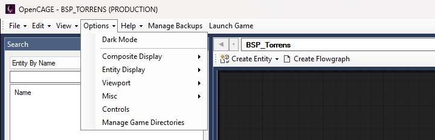
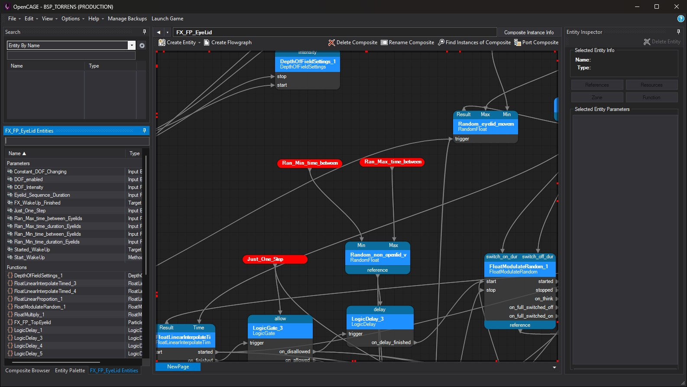
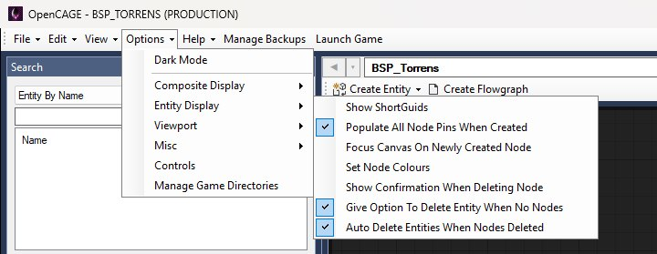
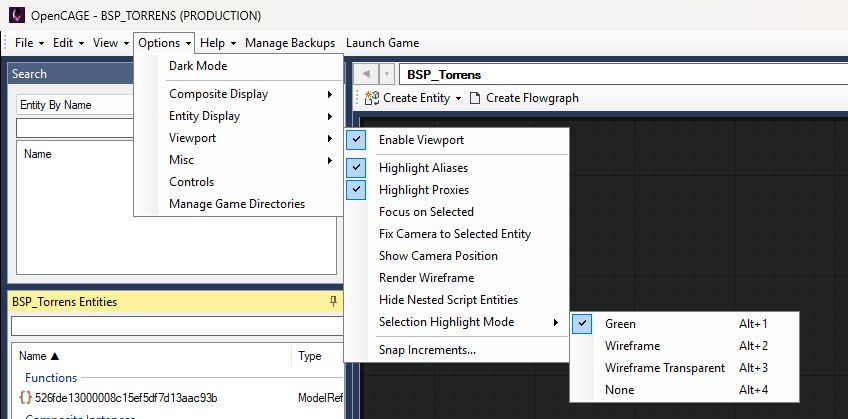
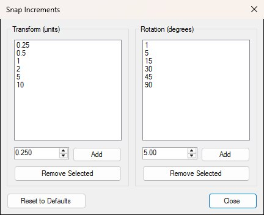
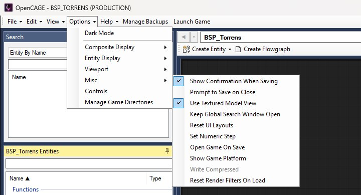
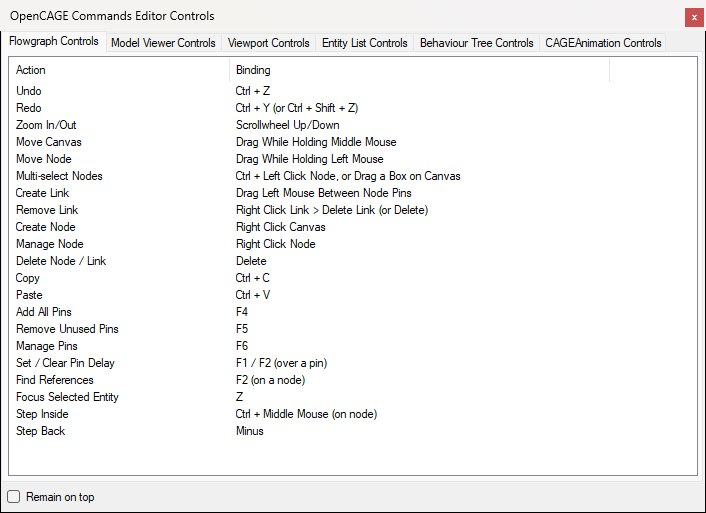
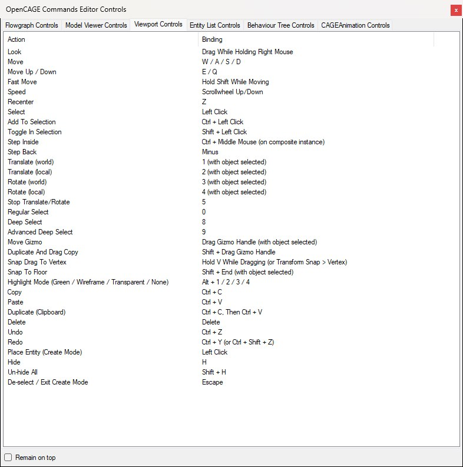

The toolbar Options menu configures the script editor — how composites and entities are shown, Viewport behaviour, save/launch helpers, and more. It opens from the Options button on the main toolbar, between View and Help:

Composite Display, Entity Display, Viewport and Misc open submenus, mostly of checkboxes that stick between sessions. Controls opens a shortcut reference, and Manage Game Directories opens the multi-install manager.
The menu stays open after you tick something, so you can set several options in one go — it closes on an outside click, on Escape, or when it loses focus.
The first item in the Options menu. Dark Mode switches the whole editor to a dark theme — the main window, dock panels, dialogs, the flowgraph canvas and the resource editors. Below is the script editor with it on:

Themes swap live: you don't need to reload the level or restart OpenCAGE, and any windows you already have open re-theme with the rest. The docked panels are rebuilt in place to pick up the new theme; in the rare case that can't be done, OpenCAGE offers to restart to finish the switch. The setting is remembered between sessions and is off by default.
The Entity Display submenu controls how entities and their flowgraph nodes are shown, coloured and removed. Below it is open with the default ticks:

Node colours aren't set here any more: each node is coloured by its type, and the colours aren't configurable.
Nor is there a choice about what happens to an entity when its last node is removed. It's deleted with the node — unless it's something the level places in the world (a model, a light or another of the types on the Viewport's Create menu), or something else still refers to it: a TriggerSequence, a CAGEAnimation, a proxy or an alias. Those are left in the composite without a node. Hold Shift while removing nodes to delete their entities outright, whatever they are. The nodes and any entities that go with them undo as one step.
Full Viewport usage is covered in the Viewport docs. The submenu is shown below with the Viewport enabled and the Selection Highlight Mode list open; everything under Enable Viewport is greyed out while the Viewport is off.

GALAXY.ITEMS_BIN) as the Viewport's sky, on black, the way the game does (on by default). Off, the Viewport shows its plain sky. A level with no galaxy keeps the plain sky either way, and Generate Galaxy in the Galaxy Editor updates the Viewport straight away. Planets aren't drawn in the sky.
The shipped lists: 0.25 to 10 units, and 1 to 90 degrees.
The Misc submenu gathers the save, launch, layout and model-preview helpers. Below it is open with the Viewport enabled:

Write Compressed is greyed out because it only reports the loaded level's state; Reset Render Filters On Load is listed only while the Viewport is enabled.
0.1, rotation 1.0).Saving an uncompressed level now always writes both the PAK and BIN forms of the Commands data — that used to be an option here and no longer is. Compressed levels still save as BIN only.
Opens the read-only Controls window shown below, with shortcut reference tabs:

The window opens on the Flowgraph Controls tab. Each tab is a read-only Action / Binding list.
Longer lists scroll, but the window can be resized to show more at once. Viewport Controls is the longest of the six — below it is shown with the window enlarged so every row is in view:

Tick Remain on top to keep the window above the editor while you work, so you can refer to it without it disappearing behind the main window.
Opens the Game Directory Manager — register installs, set the default, and open extra editor windows. Available only in the primary OpenCAGE window (the one launched from Steam), not in child editors opened for other installs. If the primary window is closed while child editors are still open, one of them takes over and the item appears in its menu a few seconds later.
Full walkthrough: Multiple Game Installs.